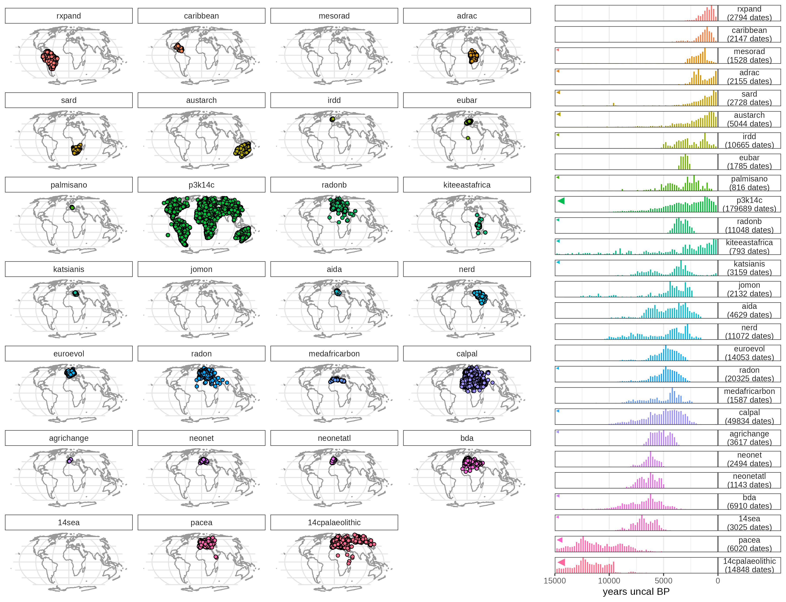

c14bazAAR is an R package to query different openly accessible radiocarbon date databases. It allows basic data cleaning, calibration and merging. If you’re not familiar with R other tools (such as GoGet) to search for radiocarbon dates might be better suited for your needs.
- Installation
- How to use (Download, Calibration, Country attribution, Duplicates, Conversion, Technical functions, Plotting and visualization, Interaction with other radiocarbon data packages)
- Databases
- Contributing (Adding database getter functions, Pre-submision testing, Versioning)
- Citation
- License
If you want to use data downloaded with c14bazAAR for your research, you have to cite the respective source databases. Most databases have a preferred way of citation that also may change over time with new versions and publications. Please check the relevant homepages to find out more. The output of c14bazAAR does not contain the full citations of the individual dates, but only a short reference tag. For further information you have to consult the source databases.
Installation
We recommend to install the stable version from the R-universe repository of rOpenSci with the following command (in your R console):
install.packages("c14bazAAR", repos = c(ropensci = "https://ropensci.r-universe.dev"))The development version can be installed from github with the following command (in your R console):
if(!require('remotes')) install.packages('remotes')
remotes::install_github("ropensci/c14bazAAR")Both versions are up-to-date and include all databases and features. Installing the development version on Windows requires the toolchain bundle Rtools.
The package needs a lot of other packages – many of them only necessary for specific tasks. Functions that require certain packages you don’t have installed yet will stop and ask you to enable them. Please do so with install.packages() to download and install the respective packages from CRAN.
How to use
The package contains a set of getter functions (see below) to query the databases. Thereby not every available variable from every archive is downloaded. Instead c14bazAAR focuses on a selection of the most important and most common variables to achieve a certain degree of standardization. The downloaded dates are stored in the custom S3 class c14_date_list which acts as a wrapper around the tibble class and provides specific class methods.
A workflow to download and prepare all dates could look like this:
library(c14bazAAR)
library(magrittr)
get_c14data("all") %>%
remove_duplicates() %>%
calibrate() %>%
determine_country_by_coordinate()It takes quite some time to run all of this and it’s probably not necessary for your use case. Here’s a list of the main tasks c14bazAAR can handle. That allows you to pick what you need:
Download
c14bazAAR contains a growing selection of getter functions to download radiocarbon date databases. Here’s a list of all available databases. You can download all dates at once with get_c14data("all"). The getters download the data, adjust the variable selection according to a defined variable key and transform the resulting list into a c14_date_list.
See ?get_c14data for more information.
x <- get_c14data("all")Calibration
The calibrate() function calibrates all valid dates in a c14_date_list individually with Bchron::BchronCalibrate(). It provides two different types of output: calprobdistr and calrange.
See ?calibrate for more information.
x %>% calibrate()Country attribution
Filtering 14C dates by country is useful for spatial filtering. Most databases provide the variable country, but they don’t rely on a unified naming convention and therefore use various terms to represent the same entity. The function determine_country_by_coordinate() determines the country a date is coming from by intersecting its spatial coordinates with polygons from rworldxtra::countriesHigh.
See ?country_attribution for more information.
x %>% determine_country_by_coordinate()Duplicates
Some of the source databases already contain duplicated dates and for sure you’ll have some if you combine different databases. As a result of the long history of these archives, which includes even mutual absorption, duplicates make up a significant proportion of combined datasets. It’s not trivial to find and deal with theses duplicates, because they are not exactly identical between databases: Sometimes they are linked to conflicting and mutually exclusive context information.
For an automatic search and removal based on identical lab numbers we wrote remove_duplicates(). This functions offers several options on how exactly duplicates should be treated.
If you call remove_duplicates() with the option mark_only = TRUE then no data is removed, but you can inspect the duplicate groups identified.
See ?duplicates for more information.
x %>% remove_duplicates()Conversion
A c14_date_list can be directly converted to other R data structures. So far only as.sf() is implemented. The sf package provides great tools to manipulate and plot spatial vector data. This simplifies certain spatial operations with the date point cloud.
See ?as.sf for more information.
x %>% as.sf()Technical functions
c14_date_lists are constructed with as.c14_date_list. This function takes data.frames or tibbles and adds the c14_date_list class tag. It also calls order_variables() to establish a certain variable order and enforce_types() which converts all variables to the correct data type. There are custom print(), format() and plot() methods for c14_date_lists.
The fuse() function allows to rowbind multiple c14_date_lists.
See ?as.c14_date_list and ?fuse.
x1 <- data.frame(
c14age = 2000,
c14std = 30
) %>% as.c14_date_list()
x2 <- fuse(x1, x1)Plotting radiocarbon data
c14bazAAR only provides a very basic plot function for c14_date_lists. The simple plotting vignette introduces some techniques to help you get started with more sophisticated visualization.
Other radiocarbon packages
There are several R packages that provide functions to calibrate, analyze or model radiocarbon dates: e.g. oxcAAR, rcarbon, Bchron
They usually have a simple, vector based interface and you can use c14_date_list columns as input.
rcarbon::calibrate(x = x$c14age, error = x$c14std)Databases

To suggest other archives to be queried you can join the discussion here.
| Database | Description |
|---|---|
|
14cpalaeolithic 2022-02-01 (V29) get_c14data("14cpalaeolithic")
|
Radiocarbon Palaeolithic Europe Database. |
|
14sea 2017-01-29 get_c14data("14sea")
|
14C database for Southeast Europe and Anatolia (10,000–3000 calBC). |
|
adrac latest get_c14data("adrac")
|
Archives des datations radiocarbone d’Afrique centrale by Dirk Seidensticker. |
|
agrichange 2021-05-21 get_c14data("agrichange")
|
Radiocarbon dates associated to Neolithic contexts (ca. 5900 – 2000 cal BC) from the northwestern Mediterranean Arch to the High Rhine area by Héctor Martínez-Grau, Berta Morell-Rovira & Ferran Antolín (2021). |
|
AIDA latest get_c14data("aida")
|
Archive of Italian radiocarbon DAtes Alessio Palmisano, Andrew Bevan, Alex Kabelindde, Neil Roberts & Stephen Shennan (2021). |
|
austarch 2013-11-28 get_c14data("austarch")
|
A Database of 14C and Luminescence Ages from Archaeological Sites in Australia by Alan N. Williams, Sean Ulm, Mike Smith, Jill Reid. |
|
BDA 2020-03-29 get_c14data("bda")
|
Base de Données Archéologiques by Thomas Perrin (1994). |
|
calpal 2020-08-20 get_c14data("calpal")
|
Radiocarbon Database of the CalPal software package by Bernhard Weninger. See nevrome/CalPal-Database for an interface. |
|
caribbean 2021-05-21 get_c14data("caribbean")
|
A compilation of 2147 anthropogenic radiocarbon (14C) dates for the Caribbean region from 504 sites across 57 islands by Phil Riris (2021). |
|
eubar 2017-10-02 get_c14data("eubar")
|
A database of 14C measurements for the European Bronze Age by Gacomo Capuzzo. |
|
euroevol 2015-07-09 get_c14data("euroevol")
|
Cultural Evolution of Neolithic Europe Dataset by Katie Manning, Sue Colledge, Enrico Crema, Stephen Shennan and Adrian Timpson. |
|
irdd 2018-08-13 get_c14data("irdd")
|
Robert M Chapple’s Catalogue of Radiocarbon Determinations & Dendrochronology Dates is a free-to-download resource for Irish archaeology. |
|
jomon latest get_c14data("jomon")
|
A multi-proxy inference of Jōmon population dynamics using bayesian phase models, residential data, and summed probability distribution of 14C dates Enrico R. Crema and Ken’ichi Kobayashi (2020). |
|
katsianis 2020-08-20 get_c14data("katsianis")
|
An Aegean History and Archaeology Written through Radiocarbon Dates Markos Katsianis, Andrew Bevan, Giorgos Styliaras & Yannis Maniatis (2020). |
|
kiteeastafrica 2016-04-28 get_c14data("kiteeastafrica")
|
Radiocarbon dates from eastern Africa in the CARD2.0 format by Colin Courtney Mustaphi, Rob Marchant. |
|
MedAfriCarbon 2020-03-20 get_c14data("medafricarbon")
|
The MedAfriCarbon Radiocarbon Database and Web Application. Archaeological Dynamics in Mediterranean Africa, ca. 9600–700 BC by Giulio Lucarini, Toby Wilkinson, Enrico R. Crema, Augusto Palombini, Andrew Bevan and Cyprian Broodbank (2020). |
|
MesoRAD 2020-09-01 (V1.1) get_c14data("mesorad")
|
Data for End-to-end Bayesian analysis of 14C dates reveals new insights into lowland Maya demography by Michael Holton Price, José M. Capriles, Julie A. Hoggarth, Kyle Bocinsky, Claire E. Ebert, James Holland Jones. |
|
neonet 2023-12-08 (V2) get_c14data("neonet")
|
NeoNet Med. Radiocarbon Dates for the Late Mesolithic/Early Neolithic Transition in the North Central-Western Mediterranean Basin by Thomas Huet, Miriam Cubas, Juan F. Gibaja, F. Xavier Oms, Niccolò Mazzucco. |
|
neonetatl 2023-12-08 (V1) get_c14data("neonetatl")
|
NeoNet Atlantic. Radiocarbon Dates for the Late Mesolithic/Early Neolithic Transition in the Southern European Atlantic Coast by Thomas Huet, Ana Catarina Basílio, António Faustino Carvalho, Miriam Cubas, Juan F. Gibaja, Elías López-Romero, F. Xavier Oms, Niccolò Mazzucco. |
|
NERD latest get_c14data("nerd")
|
Near East Radiocarbon Dates Alessio Palmisano, Andrew Bevan, Dan Lawrence & Stephen Shennan (2021). |
|
pacea 2020-01-22 get_c14data("pacea")
|
PACEA Geo-Referenced Radiocarbon Database for the late Middle Paleolithic, Upper Paleolithic, and initial Holocene in Europe by Francesco D’Errico, William E. Banks, Marian Vanhaeren, Véronique Laroulandie and Mathieu Langlais (2011).. |
|
palmisano 2017-09-23 get_c14data("palmisano")
|
Regional Demographic Trends and Settlement Patterns in Central Italy: Archaeological Sites and Radiocarbon Dates by Alessio Palmisano, Andrew Bevan and Stephen Shennan (2018). |
|
p3k14c 2021-08-03 (1.0.0) get_c14data("p3k14c")
|
p3k14c: A synthetic global database of archaeological radiocarbon dates by Darcy Bird, Lux Miranda, Marc Vander Linden, Robinson, Erick, R. Kyle Bocinsky, Chris Nicholson, José M. Capriles, Judson Byrd Finley, Eugenia M. Gayo, Adolfo Gil, Jade d’Alpoim Guedes, Julie A. Hoggarth, Andrea Kay, Emma Loftus, Umberto Lombardo, Madeline Mackie, Alessio Palmisano, Steinar Solheim, Robert L. Kelly, and Jacob Freeman (2022). c14bazAAR only features the “scrubbed and fuzzed” dataset as included in the p3k14c package. |
|
radon latest get_c14data("radon")
|
Central European and Scandinavian database of 14C dates for the Neolithic and Early Bronze Age by Dirk Raetzel-Fabian, Martin Furholt, Martin Hinz, Johannes Müller, Christoph Rinne, Karl-Göran Sjögren und Hans-Peter Wotzka. |
|
radonb latest get_c14data("radonb")
|
Database for European 14C dates for the Bronze and Early Iron Age by Jutta Kneisel, Martin Hinz, Christoph Rinne. |
|
rxpand 2020-10-20 get_c14data("rxpand")
|
Radiocarbon dates for the spread of farming and ceramics in tropical South America by Jonas Gregorio de Souza. |
|
sard 2021-03-01 get_c14data("sard")
|
Southern-African-Radiocarbon-Database by Emma Loftus, Peter J. Mitchell & Christopher Bronk Ramsey. |
Deprecated databases
These databases have been removed from c14bazAAR, because they are not openly online available any more:
- context: Collection of radiocarbon dates from sites in the Near East and neighboring regions (20.000 - 5.000 calBC) by Utz Böhner and Daniel Schyle.
Contributing
If you would like to contribute to this project, please start by reading our Guide to Contributing. Please note that this project is released with a Contributor Code of Conduct. By participating in this project you agree to abide by its terms.
Adding database getter functions
If you want to add another radiocarbon database to c14bazAAR (maybe from the list here) you can follow this checklist to apply all the necessary changes to the package:
- Add your database to the variable_reference table and map the database variables to the variables of c14bazAAR and other databases.
- Write the getter function
get_[The Database Name]in an own script file: get_[the database name].R. For the script file names we used a lowercase version of the database name. The getter functions have a standardized layout and always yield an object of the classc14_date_list. Please look at some of the available functions to get an idea how it is supposed to look like and which checks it has to include. Make sure not to store data outside oftempdir(). Some databases include non-radiocarbon dates: Make sure to filter them out – c14bazAAR so far only works with radiocarbon dates. - Add the following roxygen2 tags above the function definition to include it in the package documentation.
#' @rdname db_getter_backend
#' @export- Update the package documentation with roxygen2.
- Add the database url(s) to the db_info table to make
get_db_url("[the database name]")work. - Run the data-raw/data_prep.R script to update the data objects in the package. Only this enables the changes made in step 5. You should test your changes now by running the respective getter function.
- Add the getter function your wrote in 2 to the functions vector in
get_all_parser_functions(). - Document the addition of the new function in the NEWS.md file.
- Add the new database to the list of Currently available databases in the DESCRIPTION file.
- Add your function to the database list in the README file here.
- Update the README map figure by running the script README_map_figure.R.
Pre-submission testing
Before submitting patches or new getter functions via a pull request, we ask you to check the following items:
- The package works and all functions are usable
- The package documentation is up-to-date and represents the functions correctly
- The test coverage of the package functions is sufficient
-
DESCRIPTIONis up-to-date with the latest version number and database list -
README.mdis up-to-date -
NEWS.mdis up-to-date and includes the latest changes - Package checks ran and did not yield any ERRORS, WARNINGS or NOTES
- Spellcheck with
devtools::spell_check()ran and did yield not only false-positives - codemeta.json is up-to-date (can be updated with
codemetar::write_codemeta()) -
inst/CITATIONis up-to-date - The package does not make external changes without explicit user permission. It does not write to the file system, change options, install packages, quit R, send information over the internet, open external software, etc.
- No reverse dependencies break because of the new package version (
devtools::revdep_check())
Versioning
Version numbers (releases) follow the semantic versioning schema and consist of mayor and minor releases as well as patches.
- x.y.z: a mayor release will be made once an existing function is radically changed or removed and thus the package API is changed.
- x.y.z: a minor release contains new parsers and auxiliary functions.
- x.y.z: a patch updates existing parsers and functions.
Citation
Schmid et al., (2019). c14bazAAR: An R package for downloading and preparing C14 dates from different source databases. Journal of Open Source Software, 4(43), 1914, https://doi.org/10.21105/joss.01914
@Article{Schmid2019,
title = {{c14bazAAR}: An {R} package for downloading and preparing {C14} dates from different source databases},
author = {Clemens Schmid and Dirk Seidensticker and Martin Hinz},
journal = {Journal of Open Source Software},
volume = {4},
number = {43},
pages = {1914},
month = {nov},
year = {2019},
doi = {10.21105/joss.01914},
url = {https://doi.org/10.21105/joss.01914},
}